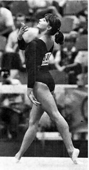

Erika Csanyi (HUN)
1980 Chunichi Cup AA Silver Medalist

Erika was born on May 22, 1965, in Budapest. Her father, Raymond, was a gymnast who competed in the late 1950s and early 1960s. He took part in 3 European Championships, 2 World Championships, and 2 Olympic Games.
Competition Results
1976
Jr. Janos Asztalos Memorial: 1st AA
1977
GBR-HUN Dual Meet: 1st AA
FRG-HUN Dual Meet: 1st Team, 1st AA
Intl. Champs. of Italy: 2nd AA
Jr. Friendship Tournament (Druzhba): 3rd Team, 5th AA, 2nd B, 3rd FX, 4th
UB
Ujpesti Dozsa-KDK Zurich Dual Meet: 1st Team, 2nd AA
1978
Coca-Cola International: 6th AA
Hungarian Masters Championships: 4th AA
Jr. European Championships: 8th AA, 6th UB, 6th FX, 7th V
Jr. Friendship Tournament (Druzhba): 4th Team, 8th FX
Jr. Hungarian Championships: 1st AA
URS-GDR-HUN Meet: 2nd AA
1979
Athens International: 4th AA, 1st UB, 4th B
FRG-HUN Dual Meet: 1st Team, 1st AA
HUN-USA Dual Meet: 1st Team, 4th AA
Hungarian International: 4th AA, 1st UB
NED-HUN Dual Meet: 1st Team, 1st AA
Pre-Olympics: 6th AA, 3rd FX, 4th UB
SUI-HUN Dual Meet: 1st AA
Master's Championships: 1st AA
1980
Budapest Championships: 1st AA
Chunichi Cup: 2nd AA
Golden Sands International: 5th AA, 2nd FX, 3rd B
HOL-HUN Dual Meet: 2nd AA
HUN-CSSR Dual Meet: 4th AA
Hungarian Championships: 2nd AA
Jr. European Championships: 20th AA
Master's Championships: 1st AA
World Cup: 11th AA, 4th UB
1981
CSSR-HUN Dual Meet: 2nd Team, 3rd AA
1983
Chunichi Cup: 11th AA
World Championships: 9th Team, 18th AA
1984
CSSR Spartakiade (Olomouc): 16th AA
GDR-HUN Dual Meet: 6th AA
Hungarian Championships: 1st AA
1985
Army Club Championships: 2nd AA, 2nd B, 2nd FX
This page was created on December
20, 2000 and was last updated on May 14, 2026.
© Gymn Forum